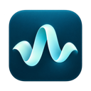

Thanks for buying QuietSpeech.
Your license key is on its way to your email from Polar. Download the app, open it from the menu bar, and paste the key when it asks.
Download QuietSpeech 0.3.3QuietSpeech needs macOS 26 on Apple silicon. If it isn't right for you, you can get a refund within 14 days. You can find your key or move it to another Mac in the customer portal.